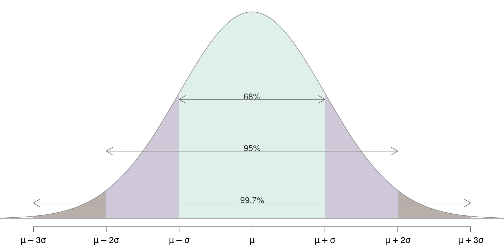
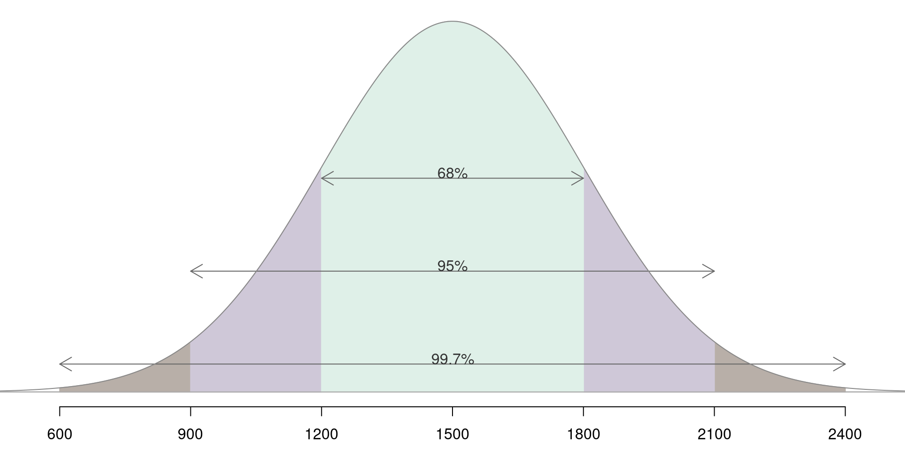
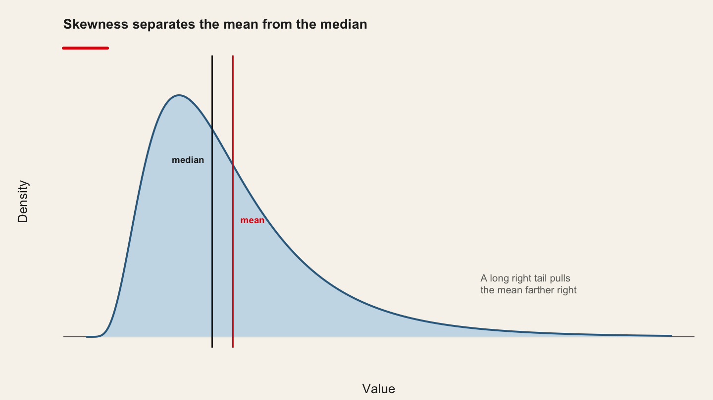
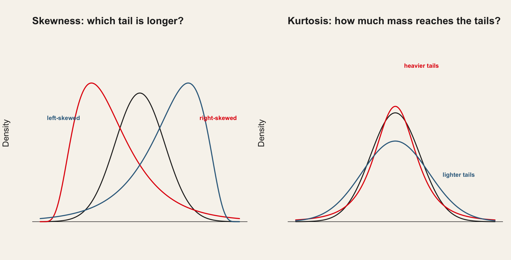

graph TB
A[Types of data] --> B[Quantitative]; B --> D{Numerical}
A --> C[Qualitative]; C --> E{Categorical}
D --> F(Continuous)
D --> G(Discrete)
E --> H(Ordinal)
E --> I(Nominal)
2 Exploratory Data Analysis, and the First Model
Before you model anything, what does the data actually look like?
| Theme of the practice | Which summary of your key variable would you defend in print? |
| Reading | Fraiberger et al. (2021), Media sentiment and international asset prices · article |
| Replication package | 10.7910/DVN/QNKFJF |
| Data | qmib.load("core") — the course spine — thirty European countries, 2010–2024 |
2.1 Before the session
Open the pre-session slides · source:
MATH60033A-S02-Pre-Session.qmd
Complete all four steps before class. Expect 90–120 minutes, plus 45 for the git setup below.
| Before class | Used in the practice for | |
|---|---|---|
| 1 | Read the paper | reproducing one of its results |
| 2 | Get both datasets | that, and profiling your own angle |
| 3 | Set up git and your group repository | pushing your work, this session and every session after |
2.1.1 ⚠️ Session 2 only — set up git and your group repository
Before the four steps, work through setup-git-and-github.md. Budget 45 minutes.
From this session onward you are assessed as a group, and your commit history is one of the four records used to check that all three members did the work. That record only exists if git knows who you are.
You must arrive with a private group repository that your teammates and the instructor can see, and with at least one commit pushed from your own machine.
Slides: slides-github-and-teamwork.qmd
2.1.2 Step 1 — Reading
Fraiberger et al. (2021), Media sentiment and international asset prices Read the article
You reproduce one of its results in the first twenty minutes of the practice, so read it with that in mind.
Read for the argument, not for coverage. Annotate four things:
| 1 | The research question, in one sentence |
| 2 | How they build the sentiment measure |
| 3 | The strongest single piece of evidence |
| 4 | One limitation you would raise as a referee |
Optional background: ISLR ch. 2 — https://www.statlearning.com/ — for the vocabulary Session 02 uses.
2.1.3 Step 2 — Concepts to review
Refresh these before class; we will use them without re-deriving them.
- Mean and median. The mean is the balance point; the median is the middle of the ordering.
- Variance and standard deviation. \(s^2 = \frac{1}{n-1}\sum_i (x_i - \bar x)^2\) — note the \(n-1\).
- Quantiles. \(\tilde q_p\) is the value below which about \(100p\%\) of the data falls.
- A straight line. \(y = \beta_0 + \beta_1 x\): what the intercept and the slope each mean.
If any of these is unfamiliar, work through it with your local LLM before class, and bring your worked notes.
2.1.4 Step 3 — Get both datasets
The practice uses two, and both should be on your machine before you arrive.
2.1.4.1 a) The paper’s replication package
This is what you reproduce in the first twenty minutes.
Harvard Dataverse: 10.7910/DVN/QNKFJF
Download once and unzip into 02-exploratory-data-analysis/data/replication/. That folder is git-ignored, so nothing large is committed. Keep the authors’ own structure and README.
2.1.4.2 b) The course data, for your own angle
This is what you apply the method to in the second half. It is already cleaned and cached — one line, nothing to download.
| Group | Angle | Your file | Unit | Columns |
|---|---|---|---|---|
| G01 | A | angle_a_country.parquet |
country × time | dictionary |
| G02 | A | angle_a_sector.parquet |
country × sector × time | dictionary |
| G03 | B | angle_b_occupation.parquet |
occupation × country × time | dictionary |
| G04 | B | angle_b_sector.parquet |
sector × country × time | dictionary |
| G05 | C | angle_c_country.parquet |
country × time | dictionary |
| G06 | C | angle_c_sector_size.parquet |
country × sector × size × time | dictionary |
| G07 | D | angle_d_partner.parquet |
reporter × partner × time | dictionary |
| G08 | D | angle_d_product.parquet |
reporter × product × time | dictionary |
| G09 | E | angle_e_centralbank.parquet |
document | dictionary |
| G10 | E | angle_e_national.parquet |
document | dictionary |
import qmib
core = qmib.load("core") # shared by every group
mine = qmib.load("angle_c_country") # YOUR file — see the table above
df = core.merge(mine, on=["geo", "time"], how="inner") # not for angle E
print(core.shape, mine.shape, df.shape)
qmib.load()resolves the local cache first, so after the first run the practice works with the wifi off.qmib.catalog()lists everything available.
Before class: load your file, join it to core, and pick the three variables your research question depends on most — the outcome, and the two you most expect to explain it. Write down one sentence on why you chose each. That is what you profile in the practice.
Read your data dictionary first. Its Traps section lists the things that have cost somebody a week, and its First look items take ten minutes. Knowing that a series is survey-based, breaks in 2021, or is structurally absent before a given year is part of your answer — not a footnote.
⚠️ The spine currently holds teaching fixtures: real schema, real coverage, real flags and real pathologies, generated from a known structure. Every method behaves as it would on the genuine sources, but no number in them is a fact about Europe. See
PROVENANCE.md.
Teaching dataset for the method exercise (optional)
Ames Housing (2,930 residential sales, 79 features)
Source: OpenML / scikit-learn fetch_openml URL: https://www.openml.org/d/42165
Download once and cache locally:
from sklearn.datasets import fetch_openml
ames = fetch_openml(name="house_prices", as_frame=True, parser="auto")
ames.frame.to_parquet("data/ames.parquet")Everything after the first run reads the local parquet file. No network access is needed during the practice.
Use this if you want to see the method work on known ground before turning it on your own angle. The result you report must come from your project.
2.1.5 Step 4 — Self-check
Answer these in writing before class. You will not hand them in, but the lecture assumes you have attempted them. If you cannot answer one, bring the question.
- Show that if \(P = X(X^\top X)^{-1}X^\top\) then \(P^2 = P\) and \(P^\top = P\).
- What is the trace of the hat matrix, and why does that number have a name you already know?
- If two columns of \(X\) are perfectly collinear, what fails - and does the fitted value \(\hat y\) still exist?
- Why does adding a variable never decrease \(R^2\)? Answer geometrically, not algebraically.
2.1.6 Using your local LLM on the preparation
Your local model is a study partner, not an answer key. Ask it to explain, to quiz you, and to argue against you. Verify everything it says against the reading.
Prompts that work well for this session:
- “I get a LinAlgError: Singular matrix. Explain what this means about the geometry of my design matrix, without giving me code.”
- “Walk me through the Frisch-Waugh-Lovell theorem using a two-regressor example with numbers.”
- “Explain the difference between numpy.linalg.inv, numpy.linalg.solve and numpy.linalg.lstsq in terms of numerical stability.”
Standing rule for this course. Whenever you use the LLM in a deliverable, you must be able to say what you checked and how. An unverified claim from a language model has the same evidential status as an unverified claim from a stranger.
2.2 The lecture
Delivered from the slides. What follows is the same material as prose.
2.2.1 Class Organization
Respect: Respect other participants and speakers.
Participation: Participate actively in discussions and activities.
Commitment: Be committed and involved in the learning process.
Collaboration: Collaborate with your peers and share your knowledge.
Confidentiality: Respect the confidentiality of shared information.
Cell phones are in backpacks, not on the table.
Computers are used for taking notes and following the course, not for personal messages or other activities.
| Session | Day and Time | Building, Room | Instructor | Session Dates |
|---|---|---|---|---|
| Session 1 | Wed 3:30PM - 6:30PM | C-Ste-Cath, Serge-Saucier | Thierry Warin | August 27, 2025 |
| Session 2 | Wed 3:30PM - 6:30PM | C-Ste-Cath, Student Associations | September 3, 2025 | |
| Session 3 | Wed 3:30PM - 6:30PM | C-Ste-Cath, Serge-Saucier | September 10, 2025 | |
| Session 4 | Wed 3:30PM - 6:30PM | C-Ste-Cath, Serge-Saucier | September 17, 2025 | |
| Session 5 | Wed 3:30PM - 6:30PM | C-Ste-Cath, Serge-Saucier | September 24, 2025 | |
| Session 6 | Wed 3:30PM - 6:30PM | Synchronous with Africa | October 1, 2025 | |
| Session 7 | Wed 3:30PM - 6:30PM | Synchronous with Africa | October 8, 2025 | |
| Session 8 | Wed 3:30PM - 6:30PM | C-Ste-Cath, Rona | November 5, 2025 | |
| Session 9 | Wed 3:30PM - 6:30PM | C-Ste-Cath, Rona | November 12, 2025 | |
| Session 10 | Wed 3:30PM - 6:30PM | C-Ste-Cath, Rona | November 19, 2025 | |
| Session 11 | Wed 3:30PM - 6:30PM | C-Ste-Cath, Rona | November 26, 2025 | |
| Session 12 | Wed 3:30PM - 6:30PM | C-Ste-Cath, Rona | December 3, 2025 |
2.2.2 Quote of the day
It’s tough to make predictions, especially about the future
2.2.3 Introduction
Statistics is a language, constructed by mathematicians.
The tools (formulas and processes) are constructs. They do not represent the truth, just the tools to get closer to the truth. They are the foundations that we use in our applications as a data analyst.
So, let us spend some time on the foundations first.
The magic in the data
2.2.4 Introduction - Differences between statistics and statistical learning?
Statistics: decision making under uncertainty.
Statistics is that branch of knowledge which deals with the multiplicity of data, its
collection,
analysis, and
interpretation
Statistical learning is a vast set of tools for understanding data
classified as supervised learning: building a statistical model for predicting, or estimating, and output based on one (single) or more (multiple) inputs.
classified as unsupervised learning: there are inputs, but no supervising output
The goal is to understand the models, intuitions, and strengths and weaknesses of the various approaches
scalar, random variable, vector, matrix
quantitative values versus qualitative values
quantitative: numerical (continuous or discrete)
qualitative: categorical (nominal or ordinal)
| Numerical | Examples | Visualizations |
|---|---|---|
| Discrete: data have a finite number of values | Number of balls in a jar | Bar charts, line graphs |
| Continuous: data have an infinite number of values | Distance, time | Histograms, line graphs |
| Categorical | Examples | Visualizations |
|---|---|---|
| Nominal: identified by particular names or categories and cannot be organized in any order | Gender, colors, locations | Bar charts |
| Ordinal: identified by particular names or categories and can be ordered | Rankings | Bar charts |
- Outcomes associated with random experiments (probabilistic) called random variables:
\[ X, Y, Z \]
- Observed values:
\[ x, y, z \]
Let \(X\) be a r.v. taking values in the sample space \(S=\left\{x\_{1},\, x\_{2},\,\ldots,x\_{k}\right\}\)
\[ p(x\_{i})=\Pr(X=x\_{i}), \quad i=1,2,\ldots,k \]
\[ \sum\_{i=1}^{k}p(x\_{i}) = p(x\_{1})+p(x\_{2})+\cdots+p(x\_{k}), = 1 \]
Three Basic Features
Center: middle or general tendency
Spread: small means tightly clustered, large means highly variable
Shape: symmetry versus skewness, kurtosis
Make the difference between a sample and a population!
2.2.5 Measuring the center
2.2.6 Measuring the center
In what follows, we will look into the following concepts:
Basics:
- The sample mean
- The sample median
Extensions:
- The trimmed mean
- The sample quantile
- The sample percentile
2.2.7 The basics: the sample mean
R.V.’s mean
\[ \mu = \sum\_{i=1}^{k} x\_{i} p(x\_{i}) \\\\ = x\_{1} \times p(x\_{1}) + \cdots + x\_{k} \times p(x\_{k}) \]
the mean is a center or average value of \((X)\)
\((\mu)\) can be any number or decimal
\((\mu)\) is the “first moment about the origin”
Sample mean
\[ \overline{x} = \frac{x\_{1} + x\_{2} + \cdots+x\_{n}}{n} \\\\ = \frac{1}{n}\sum\_{i = 1}^{n} x\_{i} \]
- Good: natural, easy to compute, nice properties
- Bad: sensitive to extreme values
Wait!
Greek letters are for the RV and latin letters are for the sample?
2.2.8 The basics: the sample mean
| stack.loss |
|---|
| 42 |
| 37 |
| 37 |
| 28 |
| 18 |
| 18 |
| 19 |
| 20 |
| etc. |
2.2.9 The basics: the sample median
How to find it
sort the data into an increasing sequence of \(n\) numbers
\(\tilde{x}\) lies in position \((n + 1)/2\)
Good: resistant to extreme values, easy to describe
Bad: not as mathematically tractable, need to sort the data to calculate
2.2.10 Extensions
How to find it
“trim” a proportion of data from both ends of the ordered list
find the sample mean of what’s left
Good: also resistant to extreme values, has good properties, too
Bad: still need to sort data to get rid of outliers
- Quantile: approximately \(100 \times p\%\) of the data fall below the value \(\tilde{q}\_{p}\)
So, \(75%\) of the data (.75*21=16) fall below the value \(19\).
2.2.11 Measuring the spread
2.2.12 Measures of spread
In what follows, we will look into the following concepts:
The sample variance
The sample standard deviation
The sample interquartile range (IQR)
2.2.13 Measures of spread
The sample variance \(s^{2}\):
\[ s^{2} = \frac{1}{n - 1}\sum\_{i = 1}^{n}(x\_{i} - \overline{x})^{2} \]
The sample standard deviation is \((s = \sqrt{s^{2}})\)
Good: tractable, nice mathematical/statistical properties
Bad: sensitive to extreme values
Interpretation of \(s\)
The empirical rule:
For nearly normally distributed data,
about \(68\%\) falls within 1 SD of the mean,
about \(95\%\) falls within 2 SD of the mean,
about \(99.7\%\) falls within 3 SD of the mean.
It is possible for observations to fall 4, 5, or more standard deviations away from the mean, but these occurrences are very rare if the data are nearly normal.

SAT scores are distributed nearly normally with mean 1500 and standard deviation 300.
Following the 68-95-99.7 Rule:
\(\sim 68\%\) of students score between 1200 and 1800 on the SAT.
\(\sim 95\%\) of students score between 900 and 2100 on the SAT.
\(\sim 99.7\%\) of students score between 600 and 2400 on the SAT.

\[ IQR = \tilde{q}\_{0.75} - \tilde{q}\_{0.25} \]
Good: resistant to outliers (see session 3)
Bad: only considers middle \(50\%\) of the data, equivalent to:
2.2.14 Measuring the shape
2.2.15 Measuring the shape
In what follows, we will look into the following concepts:
Skewness: degree of “symmetry”
Kurtosis: degree of “thickness”
2.2.16 Measuring the shape

2.2.17 Measuring the shape
Symmetric or skewed
- right (positive) and left (negative) skewness
Kurtosis
leptokurtic - steep peak, heavy tails
platykurtic - flatter, thin tails
mesokurtic - right in the middle

Wait!
Why are we looking at the distribution of the sample?
Is the study of the sample shape/distribution relevant because otherwise the tools designed by the statisticians would not work?
2.2.18 Measures of shape: sample skewness
The sample skewness \(g\_{1}\):
\[ g\_{1} = \frac{1}{n}\frac{\sum\_{i = 1}^{n}(x\_{i} - \overline{x})^{3}}{s^{3}} \]
Things to notice:
\(-\infty < g\_{1} < \infty\)
sign of \(g\_{1}\) indicates direction of skewness \(\pm)\)
2.2.19 Measures of shape
import numpy as np
def skewness(x):
"""g1, exactly as defined on the previous slide."""
x = np.asarray(x, float)
xbar, s = x.mean(), x.std(ddof=1)
return ((x - xbar) ** 3).mean() / s ** 3
skewness(stack_loss)np.float64(1.1564007167787318)If \(\vert g\_{1} \vert > 2\sqrt{6/n}\), then the data distribution is substantially skewed in the direction of the sign of \(g\_{1}\)
The sample excess kurtosis \(g\_{2}\):
\[ g\_{2} = \frac{1}{n}\frac{\sum\_{i = 1}^{n}(x\_{i} - \overline{x})^{4}}{s^{4}} - 3 \]
Things to note:
\(-2 \leq g\_{2} < \infty\)
\(g\_{2} > 0\) indicates leptokurtosis
\(g\_{2} < 0\) indicates platykurtosis
def excess_kurtosis(x):
"""g2, with the -3 that puts the normal distribution at zero."""
x = np.asarray(x, float)
xbar, s = x.mean(), x.std(ddof=1)
return ((x - xbar) ** 4).mean() / s ** 4 - 3
excess_kurtosis(stack_loss)np.float64(0.13435238060300536)If \(\vert g\_{2} \vert > 4\sqrt{6/n}\), then the data distribution is substantially kurtic.
2.3 From data to models
2.3.1 The question
Do more productive European countries have higher income per head?
Thirty countries, fifteen years, both numbers already in the repository.
No download, no API key: data/spine/core.parquet.
2.3.2 Always look first
import pandas as pd
import matplotlib.pyplot as plt
core = pd.read_parquet("data/spine/core.parquet")
d = core.dropna(subset=["gdp_pc_eur", "productivity_idx"])
plt.scatter(d["productivity_idx"], d["gdp_pc_eur"], s=12, alpha=0.6)
plt.xlabel("Labour productivity index (EU average = 100)")
plt.ylabel("GDP per capita (EUR)")
plt.show()Draw the picture before you fit anything. A straight line through a curved cloud is still a straight line, and the software will not warn you.
2.3.3 The model, and what each piece is
\[y_i = \beta_0 + \beta_1 x_i + \varepsilon_i\]
| Symbol | Name | Here |
|---|---|---|
| \(y_i\) | outcome | GDP per capita |
| \(x_i\) | predictor | productivity index |
| \(\beta_0\) | intercept | predicted \(y\) when \(x = 0\) |
| \(\beta_1\) | slope | change in \(y\) per unit of \(x\) |
| \(\varepsilon_i\) | error | what \(x_i\) does not explain |
2.3.4 Choosing the line
\[\min_{\beta_0,\,\beta_1} \sum_{i=1}^{n}\big(y_i - \beta_0 - \beta_1 x_i\big)^2\]
Squaring makes every miss positive, so misses above and below cannot cancel — and it punishes one large miss more than several small ones.
This is the mean, done conditionally. The mean minimises \(\sum(x_i - c)^2\); the regression line minimises the same quantity over lines.
2.3.5 Three lines of Python
import statsmodels.formula.api as smf
model = smf.ols("gdp_pc_eur ~ productivity_idx", data=d).fit()
print(model.params)Intercept -86118.1
productivity_idx 1111.3Read the ~ as “explained by”. .fit() does the arithmetic; model.params holds the estimates.
2.3.6 The slope is the sentence you will write
Comparing two country-years that differ by one point of productivity, the more productive one has on average €1,111 more GDP per capita.
Always say the units aloud — euros per index point. A slope without units is not a finding.
The intercept says a country at productivity 0 would have −€86,118. The index runs from 72 to 129 in our data. Do not interpret an intercept you have no data near.
2.3.7 Fitted values and residuals
Germany, 2022 — productivity 121.2, actual GDP per capita €54,239:
\[\hat y = -86{,}118 + 1{,}111.3 \times 121.2 = 48{,}606\]
\[e = 54{,}239 - 48{,}606 = \mathbf{+5{,}633}\]
Germany sits €5,633 above the line. That residual is everything about German income that productivity alone does not account for — and reading residuals is most of Session 03.
2.3.8 How much did the line explain?
print(f"R-squared = {model.rsquared:.3f}")R-squared = 0.627\(R^2\) is the share of the variation in \(y\) the model accounts for: 62.7%, on a scale from 0 to 1.
It does not say the model is correct, that the relationship is causal, or that the line will predict a new country well.
2.3.9 Two predictors: what “controlling for” means
model2 = smf.ols("gdp_pc_eur ~ productivity_idx + gfcf_meur", data=d2).fit()Intercept -71211.8
productivity_idx 928.3
gfcf_meur 68.7
R-squared = 0.692The productivity slope falls 1,111 → 928, about 16%. It now answers a different question: comparing country-years with the same investment, one point more productivity goes with €928 more income.
2.3.10 Correlation is not causation
The slope says the two move together. It does not say raising productivity by a point would raise income by €928.
- Productivity raises income
- Higher income buys the capital and training that raise productivity — the arrow points the other way
- Something else — institutions, education, market size — drives both
Nothing in the output distinguishes these. Until Sessions 10–11, write “is associated with” — and mean it.
2.3.11 Conclusion
2.3.12 Conclusion
- We have seen the basic concepts of exploratory data analysis
- We have seen the basic concepts of measuring the center, spread and shape of a distribution
- We have fitted the smallest possible model, and read its slope in units
- Session 03 asks the next question: can this regression be trusted?
2.4 In the practice
2.4.1 Profiling a variable you will have to defend
Open the practice slides · source:
MATH60033A-S02-Practice.qmd
2.4.1.1 The theme of this session
3 Which summary of your project’s key variable would you defend in print?
All ten groups attack this question, each on its own project, and the last twenty minutes assemble the answers.
3.0.0.1 What you are doing, in one paragraph
Every group has a research question and a data angle (RESEARCH-MANDATES.md). Today you profile the three variables that question depends on most — centre, spread and shape — and decide which summary you would put in a paper. The deliverable is not a table of numbers. It is a defensible choice, with the reason written down.
3.0.0.2 Before you start
Everyone in the group pushes at least once this session. Replace XX with your group number everywhere below — group 07 uses group-07.
git checkout -b group-XX
mkdir -p 02-exploratory-data-analysis/02-practice/submissions/group-XX3.0.0.3 0 · Reproduce one result from the paper — 20 min
Fraiberger et al. build a sentiment index and relate it to returns. Take the descriptive result the paper opens with — the distribution of the sentiment measure — and reproduce it from the replication package you downloaded:
02-exploratory-data-analysis/data/replication/A failed reproduction that you diagnose earns full marks; one you do not attempt earns none. “It did not work” is not a diagnosis — where did it stop, and what did you check?
3.0.0.4 1 · Load your angle and pick three variables — 15 min
import numpy as np
import pandas as pd
import qmib
from scipy import stats
core = qmib.load("core") # shared by every group
mine = qmib.load("angle_c_country") # your angle — see your dictionary
df = core.merge(mine, on=["geo", "time"], how="inner")Choose three numeric variables: the outcome your research question is about, and the two you most expect to explain it. Write one sentence each on why you chose it, before you compute anything.
Read your data dictionary first. Some columns carry flags, breaks in series, or structural missingness. A variable that is only observed from 2021 will produce a perfectly clean profile of a period that is not the one you meant to describe.
3.0.0.5 2 · Centre — 15 min
For each variable, report the mean, the 5% trimmed mean and the median.
def centre(x):
x = pd.Series(x).dropna()
return pd.Series({
"n": len(x),
"mean": x.mean(),
"trim_5%": stats.trim_mean(x, 0.05),
"median": x.median(),
})The question to answer: do the three agree? If they do not, in which direction, and by how much relative to the spread? A gap between mean and median that is a tenth of a standard deviation is a curiosity; one that is a third of a standard deviation is a finding.
3.0.0.6 3 · Spread — 15 min
Report the standard deviation and the IQR for each variable, and test the empirical rule directly:
def empirical_rule(x):
"""What fraction actually falls within 1, 2 and 3 standard deviations?"""
x = pd.Series(x).dropna()
m, s = x.mean(), x.std(ddof=1)
return {f"±{k}s": float(((x - m).abs() <= k * s).mean()) for k in (1, 2, 3)}Compare what you get against 68% / 95% / 99.7%. Where it fails, say by how much and in which tail. That failure is the bridge to the next section.
3.0.0.7 4 · Shape — 20 min
Compute skewness and excess kurtosis from the definitions in the notes, and test each against its threshold.
def shape(x):
x = pd.Series(x).dropna().to_numpy(float)
n = len(x)
xbar, s = x.mean(), x.std(ddof=1)
g1 = ((x - xbar) ** 3).mean() / s ** 3
g2 = ((x - xbar) ** 4).mean() / s ** 4 - 3
return {"n": n, "g1": g1, "g2": g2,
"skewed": abs(g1) > 2 * np.sqrt(6 / n),
"kurtic": abs(g2) > 4 * np.sqrt(6 / n)}Then plot each variable — a histogram and a boxplot side by side — and check that the picture agrees with the two numbers. If they disagree, trust the picture and work out why. Usually it is a second mode, which neither \(g_1\) nor \(g_2\) can see.
3.0.0.8 5 · Decide, and write it down — 20 min
For the variable at the centre of your research question, write the 250-word note:
- Which summary would you put in a paper, and why that one
- What the shape implies for the methods available to you later — a badly skewed outcome constrains what Session 03 can do with it
- One thing you would need to check before trusting the profile
What earns marks. A group that reports a variable is skewed, says which direction, tests it against the threshold, and then says what that costs them later has done the work. A group that prints
df.describe()and moves on has not.
3.0.0.9 6 · Two-minute report — 20 min
One slide, one variable, three numbers and one sentence of judgement. The presenter is chosen at random when you start, so everyone prepares.
3.0.0.10 Submitting
git add 02-exploratory-data-analysis/02-practice/submissions/group-XX
git commit -m "Session 02 practice — group XX"
git push -u origin group-XXEveryone pushes at least once. The log is the record of participation.
3.0.0.11 What loses marks
df.describe()pasted with no interpretation- Reporting a skewness without its threshold — \(0.4\) is substantial at \(n=437\) and negligible at \(n=40\)
- Calling a variable “normal” because it is symmetric
- Applying the empirical rule to a variable you have just shown to be skewed
- Dropping outliers before you have said what they are